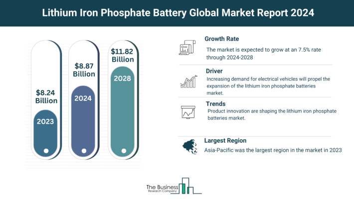
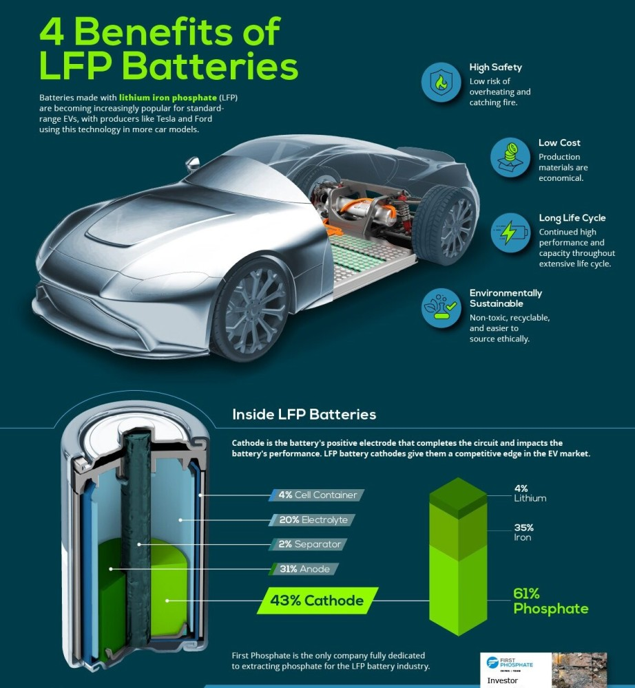
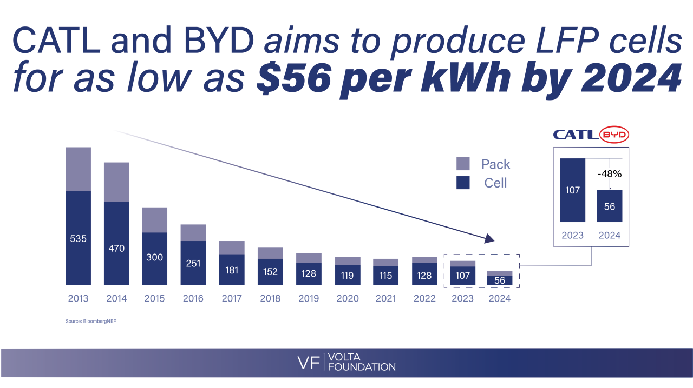
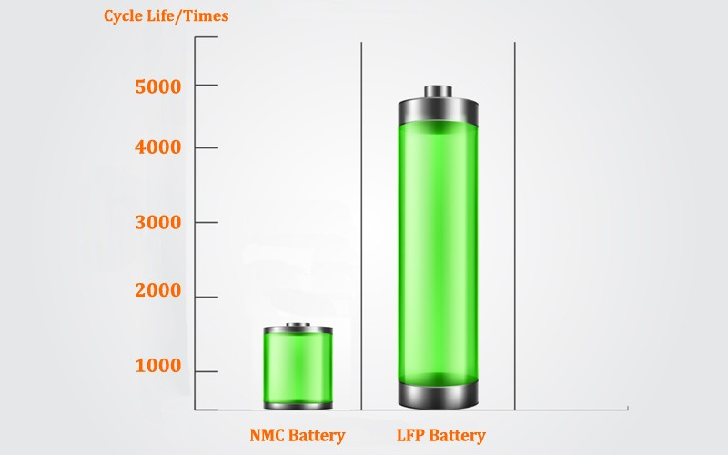
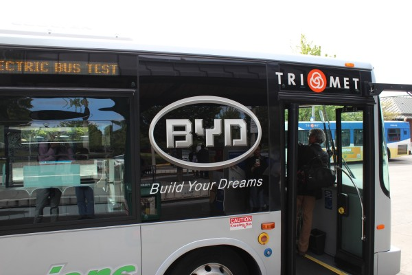
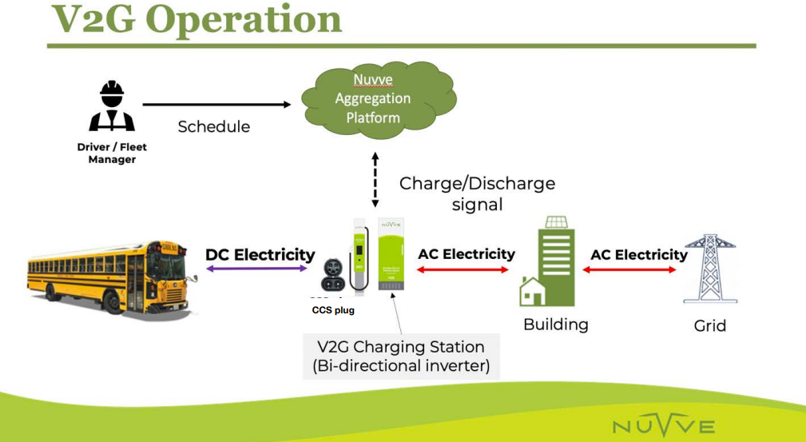
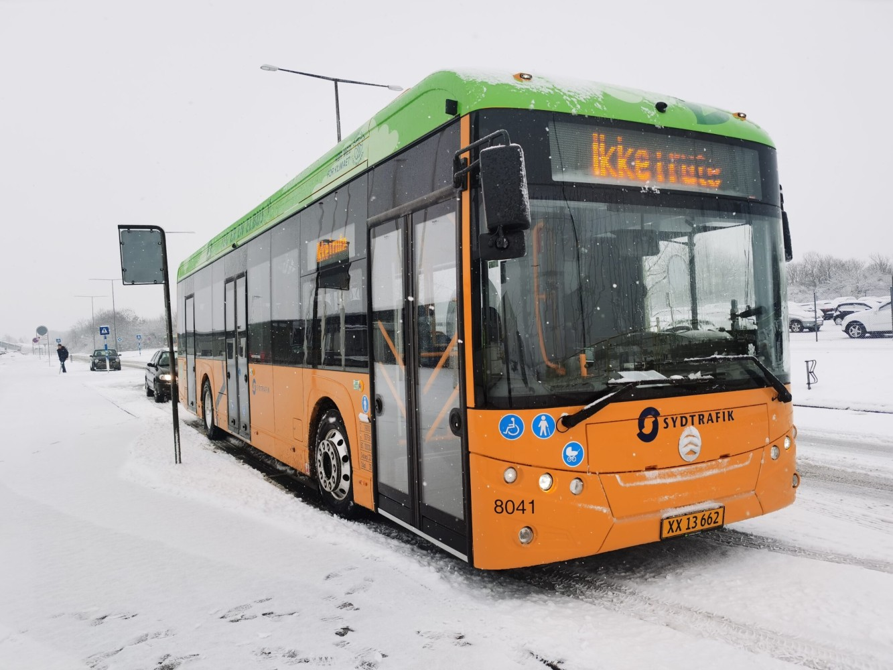
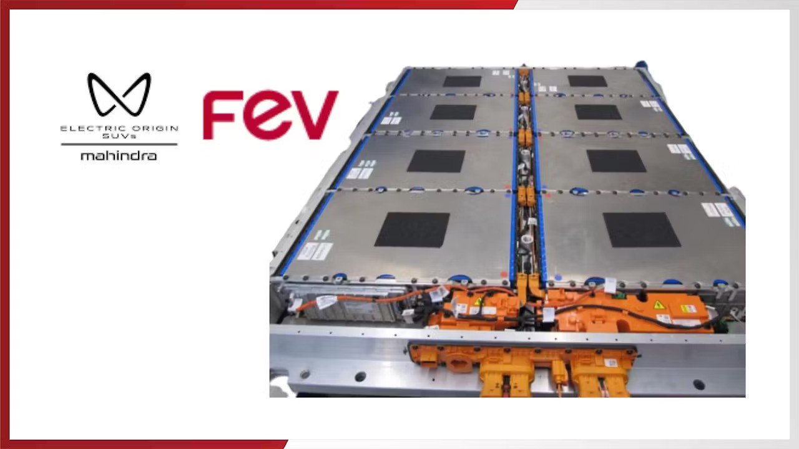
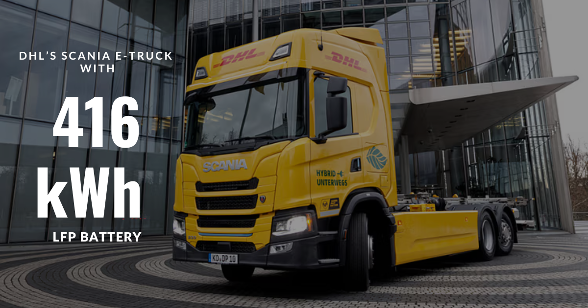

The commercial electric vehicle landscape is experiencing a dramatic shift as Lithium Iron Phosphate (LFP) batteries rapidly emerge as the preferred chemistry for fleet operators worldwide. Recent market data reveals that LFP batteries now command an impressive 40% of the global EV battery market, representing a significant jump from 32% in 2023. This surge in adoption isn't coincidental—commercial fleet operators are discovering that LFP technology offers a compelling combination of safety, durability, cost-effectiveness, and environmental sustainability that makes it ideally suited for demanding commercial applications.
Market Momentum: LFP's Rapid Commercial Adoption
The commercial EV sector has witnessed unprecedented growth in LFP battery deployment, with 341.5 GWh of LFP capacity added to the global EV fleet in 2024 alone—a remarkable 53% increase over the previous year. This acceleration is particularly pronounced in commercial applications, where fleet operators prioritize reliability and total cost of ownership over the energy density advantages traditionally associated with NMC (Nickel Manganese Cobalt) batteries.
Chinese automakers have led this transformation, with LFP representing 58% of the combined battery capacity of EVs manufactured in China and sold worldwide in 2024. The quarterly data reveals even more striking trends, with LFP's share of EVs sold in China exceeding 50% since Q4 2022 and reaching 64% in the final quarter of 2024. This dominance in the world's largest EV market signals a fundamental shift in commercial vehicle battery preferences.

The practical applications of this trend are evident in real-world commercial deployments. Golden Dragon's Pivot E12 Electric Bus Series exemplifies this shift, utilizing a substantial 345 kWh LFP battery system designed specifically for high-volume routes and zero-emission zones. These batteries provide the perfect balance of power and endurance required for demanding public transport operations, demonstrating their ability to withstand the frequent charging and discharging cycles that characterize commercial fleet usage.
Safety First: The Thermal Stability Advantage
Commercial fleet operators place paramount importance on safety, and LFP batteries deliver exceptional thermal stability that significantly reduces operational risks. Research demonstrates that LFP materials exhibit remarkable stability, showing no significant exothermic or endothermic reactions below 340°C. This characteristic provides a substantial safety margin compared to NMC batteries, which begin thermal decomposition at much lower temperatures between 200-300°C.
The thermal decomposition point of LFP batteries reaches approximately 700°C, nearly double that of NMC alternatives. This enhanced thermal stability translates directly into safer operations for commercial fleets, particularly those operating in demanding environments or high-stress conditions. When thermal breakdown does occur, LFP batteries generate less than 150 joules per gram of heat compared to NMC cells that can produce over 500 joules per gram. Additionally, LFP batteries do not release oxygen during decomposition, further reducing the risk of thermal runaway events that have plagued other battery chemistries.

The structural integrity of LFP batteries contributes significantly to their safety profile. Unlike the layered composition of NMC batteries, LFP features a crystalline framework that remains incredibly stable even as lithium ions move during charging and discharging cycles. This stability means that LFP batteries can handle overcharging situations without structural collapse, avoiding the dangerous thermal events that commercial operators must vigilantly prevent. For fleet managers responsible for multiple vehicles operating around the clock, this enhanced safety profile provides invaluable peace of mind and reduced liability exposure.
Economic Advantages: Cost Trajectory and Total Ownership Benefits
The economic case for LFP batteries in commercial applications has strengthened dramatically as manufacturing costs continue their steep decline. Current LFP battery cell prices in China hover around $70/kWh, making a 60 kWh pack cost approximately $4,200. However, major manufacturers including CATL and BYD have been aggressively targeting price reductions, aiming to cut LFP battery costs to less than $56/kWh by mid-2024.

The cost trajectory becomes even more compelling when examining longer-term projections. CATL has announced targets of achieving $36/kWh for LFP batteries as early as 2025, which would bring the cost of a 60 kWh pack down to just $2,160. This represents a dramatic reduction from current aftermarket pricing, where a 60 kWh LFP battery pack for applications like the Tesla Model 3 currently costs around $10,000. Such cost reductions make LFP technology increasingly attractive for commercial fleet operators who must carefully manage capital expenditures across large vehicle deployments.
More importantly, they demonstrate exceptional cycle life performance, often exceeding 3,000 to 5,000 cycles under optimal operating conditions. This superior durability stems from robust electrode materials and stable chemistry that minimize degradation mechanisms such as lithium plating and electrolyte decomposition.

Performance Characteristics: Built for Commercial Demands
LFP batteries excel in the specific performance characteristics that matter most for commercial vehicle applications. While NMC batteries offer higher energy density, allowing them to store more energy per unit volume or weight, LFP batteries provide higher power density, enabling rapid energy discharge that proves ideal for commercial vehicles requiring quick acceleration or high-power delivery. This power capability makes LFP batteries particularly well-suited for applications such as delivery trucks that must frequently start and stop, or buses that need reliable acceleration performance under varying load conditions.
Environmental and Sustainability Benefits
The environmental advantages of LFP batteries align perfectly with the sustainability goals driving commercial EV adoption. LFP batteries are more environmentally friendly due to their cobalt-free design and lower ecological footprint during production. This characteristic addresses growing concerns about the ethical sourcing of cobalt and the environmental impact of mining operations associated with NMC battery production.
Case Studies: Real-World Applications of LFP Batteries in Commercial EVs
Singapore’s BYD K9 Electric Bus Fleet
Singapore’s public transport system has embraced LFP technology through the deployment of 20 BYD K9 electric buses since 2020, operated by SBS Transit. These 12-meter buses utilize 310 kWh LFP batteries paired with AC synchronous motors, achieving a range of 250 km per charge under urban conditions. The decision to adopt LFP chemistry stemmed from its ability to withstand high-frequency charging cycles typical of public transit routes while maintaining operational reliability in Singapore’s tropical climate. With zero tailpipe emissions and reduced noise pollution, these buses align with the city-state’s sustainability goals while demonstrating LFP’s capability to power heavy-duty vehicles in dense urban environments.

Los Angeles Unified School District’s Blue Bird Electric School Buses
The Los Angeles Unified School District (LAUSD) has placed a record order for 180 Blue Bird electric school buses, including 150 All American and 30 Vision models, all equipped with LFP batteries. Scheduled for delivery between October 2024 and early 2025, these buses feature vehicle-to-grid (V2G) capabilities and a 130-mile range, addressing the district’s need for reliable student transportation across sprawling urban and suburban routes. LAUSD’s existing fleet of 26 Blue Bird electric buses has already demonstrated LFP’s suitability for stop-and-go school routes, where rapid charge cycles and thermal stability are critical. The district’s transition supports California’s mandate for zero-emission school buses by 2035, with LFP batteries providing the durability required for twice-daily routes and irregular charging schedules.

Golden Dragon’s Pivot E12 Electric Bus Series
Golden Dragon’s Pivot E12 Electric Bus Series, deployed in high-volume urban routes, utilizes a 345 kWh LFP battery system capable of enduring 3,000+ charge cycles without significant degradation. The E12’s direct-drive permanent magnet synchronous motor delivers 258 kW peak power and 3,500 N·m torque, enabling efficient operation in zero-emission zones and hilly terrains. In Guangzhou, China, a fleet of 200 E12 buses reduced annual maintenance costs by 40% compared to previous NMC-powered models, attributed to LFP’s resistance to voltage sag during partial state-of-charge operation. The buses’ panoramic windows and USB-equipped interiors, powered by the stable LFP system, enhance passenger comfort while maintaining consistent climate control performance.

Mahindra Electric Origin SUV’s Co-Developed LFP System
FEV and Mahindra’s collaboration on a 59 kWh and 79 kWh LFP battery system for the Electric Origin SUV highlights LFP’s adaptability to diverse vehicle platforms. Rigorously tested under extreme conditions—including nail penetration and fire exposure—the system achieved a 20-80% charge in 20 minutes while meeting AIS (Indian) and UL (global) safety standards. In simulated monsoon conditions, the battery maintained 95% capacity after 1,000 deep-cycle tests, outperforming competing chemistries in humidity resistance. This development underscores LFP’s potential in emerging markets where environmental stressors and inconsistent charging infrastructure pose unique challenges.

DHL’s Scania E-Truck with LFP Range Extender
DHL’s 100-day pilot of a Scania e-truck equipped with a 416 kWh LFP battery and fuel-powered backup generator demonstrated LFP’s viability in long-haul logistics. Operating between Berlin and Hamburg, the truck covered 22,000 km with 91.9% electric mode utilization, saving 16 metric tons of CO₂. The LFP battery’s stable thermal performance allowed seamless integration with the 120 kW range extender, providing emergency charging during unplanned route diversions. DHL reported a 30% reduction in energy costs compared to diesel counterparts, attributing this to LFP’s high round-trip efficiency (92%) during frequent partial charging at depots.

Conclusion
The rapid adoption of LFP batteries in commercial EVs represents more than a technological shift—it signals a fundamental realignment of industry priorities toward safety, sustainability, and economic viability. With LFP technology now commanding 40% of the global EV battery market and demonstrating superior performance characteristics for commercial applications, fleet operators have found a battery chemistry that meets their demanding operational requirements while supporting broader sustainability goals.